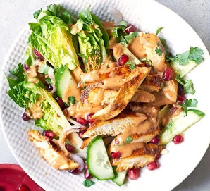

Chicken Salad

What is a Chicken Salad?
It's just chicken with some salad, innit?
Ingredients:
- 1 tbsp tamari
- 1 tsp medium curry powder
- 1 tsp medium curry powder
- ¼ tsp ground cumin
- 1 garlic clove, finely grated
- 1 tsp clear honey
- 2 skinless chicken breast fillets (or use turkey breast)
- 1 tbsp crunchy peanut butter (choose a sugar-free version with no palm oil, if possible)
- 1 tbsp sweet chilli sauce
- 1 tbsp lime juice
- sunflower oil, for wiping the pan
- 2 Little Gem lettuce hearts, cut into wedges
- ¼ cucumber, halved and sliced
- 1 banana shallot, halved and thinly sliced
- coriander, chopped
- seeds from ½ pomegranate
Steps:
- Pour the tamari into a large dish and stir in the curry powder, cumin, garlic and honey. Mix well. Slice the chicken breasts in half horizontally
to make 4 fillets in total, then add to the marinade and mix well to coat. Set aside in the fridge for at least 1 hr, or overnight, to allow
the flavours to penetrate the chicken.
- Meanwhile, mix the peanut butter with the chilli sauce, lime juice, and 1 tbsp water to make a spoonable sauce. When ready to cook the chicken,
wipe a large non-stick frying pan with a little oil. Add the chicken and cook, covered with a lid, for 5-6 mins on a medium heat,
turning the fillets over for the last min, until cooked but still moist. Set aside, covered, to rest for a few mins.
- While the chicken rests, toss the lettuce wedges with the cucumber, shallot, coriander and pomegranate, and pile onto plates.
Spoon over a little sauce. Slice the chicken, pile on top of the salad and spoon over the remaining sauce. Eat while the chicken is still warm.